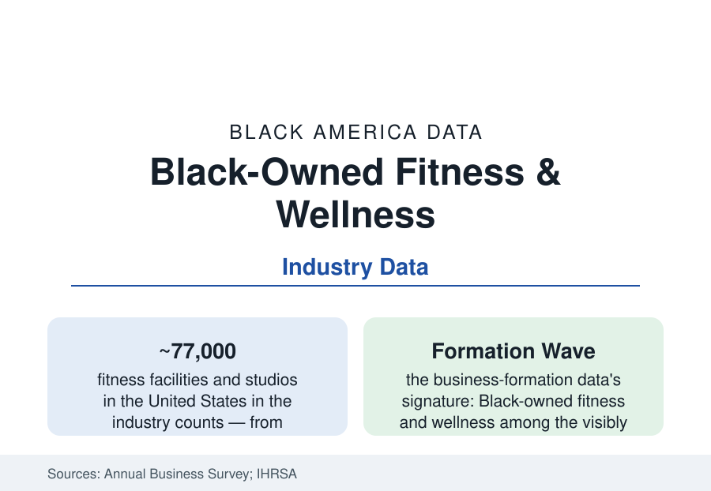

Black Business
Black-Owned Fitness and Wellness: The Gym as the New Corner Business
Black-owned gyms, studios, and wellness brands are among the fastest-growing slices of Black business formation — in the industry that sells health back to the community. The data.

The newest storefront on the Black business street is the gym: the boutique cycling studio, the boxing gym, the personal-training warehouse, the yoga and Pilates rooms, the recovery and wellness spas — a category whose Black-owned count has multiplied visibly across the 2010s and 2020s in the business-formation data, built by a generation of trainer-founders converting Instagram clienteles into leases. The sector's cultural logic is as legible as its economics: the industry that sells the body back to itself, in the neighborhoods whose health data this atlas's longest section records. This article reads the fitness file.
The Sector's Shape: Studios, Boxes, and the Trainer Economy
The ABS's arts-and-recreation and personal-services slices count Black-owned fitness businesses in the thousands nationally, weighted to the boutique end: independent gyms and studios (strength, boxing and martial arts, cycling, barre and yoga, dance fitness — the class formats whose instructor-stars build them), personal-training operations (many beginning as rented corners inside big-box gyms — the industry's peculiar apprenticeship, the trainer paying rent to train his own clients under another brand's roof until his book can carry his own lease), and the wellness tier (stretch and recovery studios, sauna and cold-plunge concepts, massage and spa businesses — the recovery economy whose price points run premium). The franchise tier (the fitness chains' ownership data showing Black franchisees a small share, the emerging Black-founded fitness franchises franchising outward from one metro's proof) mirrors the franchise article's structure at boutique scale. The digital tier rebuilt the category's entry economics in the pandemic years — the trainer-influencers' app and subscription businesses (the follower counts monetized without a lease), the hybrid studio-online models, and the equipment and apparel lines spun out of the audiences — a formation wave visible in the Census Bureau's business-application data for the sector.
The Market: Selling Health to the Health File
The demand data give the sector its particular charge: the gym-membership demographics (Black Americans at roughly population share of health-club members in the industry surveys — the consumer was never the gap) meeting the health section's ledger (the hypertension, diabetes, and obesity files' numbers concentrated in the very neighborhoods the new gyms open in) — the Black-owned fitness business thus operating as both commerce and, in many founders' documented self-description, intervention: the trainer from the neighborhood, pricing memberships for it, programming for its grandmothers' knees and its young men's leagues at once. The market's documented frictions are the consumer-file's own: the boutique price ladder ($30 classes, $200 memberships) against the local income medians — the sector's internal debate conducted in its pricing tiers (the sliding-scale and community-class models in the trade press) — the location economics (the retail strips' landlord file of the grocery article), and the wellness industry's demographic skew (the industry consumer data showing the premium wellness dollar historically aimed at an affluent white consumer — the shelf space, the brand imagery, and the instructor pipeline the Black wellness founders describe building against, their directories and expos now constituting the counter-market).
The Professions Inside: Trainers, Instructors, and the Certification Ladder
The workforce layer is the sector's ladder: the certified personal trainers and group instructors (the certification bodies' demographics — thin published data, the industry known anecdotally as diversifying fastest at the instructor tier, the yoga teacher-training file the wellness tier's documented bottleneck at price points of thousands per credential), the physical-therapy-adjacent recovery practitioners, and the studio managers and owners' bench behind the founders. The sports economy intersects at the top (the athlete-founded gyms and performance facilities of the sports-business file; the celebrity-backed wellness brands), and the institutional buyers are arriving in the current data (the corporate-wellness and insurer-partnership channels — the gym benefit platforms aggregating the independents into employer networks, a distribution door the boutique tier could never build alone — and the healthcare partnerships: the hospital systems' community-fitness programs sited, in several documented cases, in Black-owned facilities). The pandemic scar tissue is in the survival data too: the sector's 2020-21 closure wave fell hardest on the independent and minority-owned tiers in the relief-program studies — the current formation boom partially a rebuilding, its census the recovery's own measure.
Reading the Fitness Data
Thousands of storefronts, a formation wave, and a customer who was never the problem: the fitness file is the business section's optimism with its receipts attached — the barriers here were capital and leases, not demand, and the generation that cleared them is selling the health section's remedies at retail, one membership at a time, on the same streets as the pharmacy and the grocery store in the files beside this one. The Black business district's newest anchor tenant is a gym. The data say it is earning the corner.
More in Black Business
Black-Owned Businesses: Counts, Receipts, and the Representation Gap
About 161,000 Black-owned employer firms and three million solo ventures: how the Census Bureau counts Black business ownership, where firms concentrate, and the gap between population share and business share.
Black Median Net Worth: The Wealth Gap in Federal Reserve Data
The Federal Reserve puts Black median family net worth at $44,900, against $285,000 for White families — about 16 cents on the dollar. The widest gap in economic data.
Black Buying Power: The $1.8 Trillion Consumer Economy
Black buying power is estimated at about $1.8 trillion — larger than the economy of most nations. What the figure measures, who produces it, and what it buys.
Source: U.S. Census Bureau Annual Business Survey; International Health Racquet and Sportsclub Association industry data; National Business League and industry press; company records.